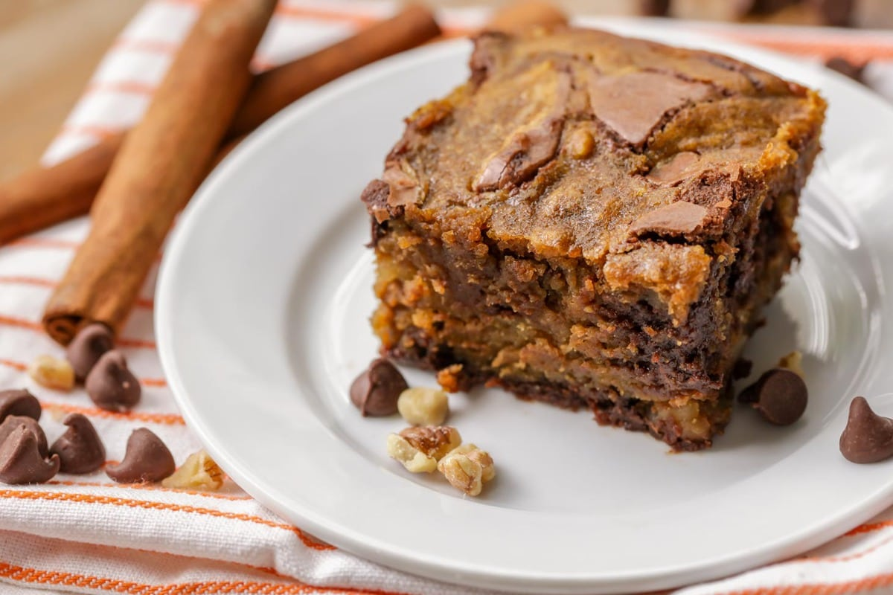

Pumpkin Brownies

Ingredients
- 3/4 cup all purpose flour
- 1/2 teaspoon baking powder
- 1/2 teaspoon salt
- 3/4 cup butter (melted)
- 1 1/2 cups white sugar
- 2 teaspoons vanilla extract
- 3 eggs
- 1/4 cup cocoa powder
- 1/2 cup semi-sweet chocolate chips
- 1/2 cup pumpkin puree
- 3/4 teaspoon cinnamon
- 1/2 teaspoon ground cloves
- 1/2 teaspoon nutmeg
Instructions
- Preheat oven to 350 degrees and line an 8x8 inch baking dish with aluminum foil. Lightly grease the foil. In a bowl combine flour, baking powder, and salt.
- In a separate bowl mix together melted butter, sugar, and vanilla. Beat in the eggs (one at a time)
- Add in the flour mixture a little at a time and stir until the batter is evenly moistened. Divide the batter in half evenly into 2 separate bowls.
- In one of the bowls, blend in the cocoa powder and chocolate chips. In the second bowl of batter, stir in pumpkin puree, cinnamon, cloves, and nutmeg.
- Spread 1/2 of the chocolate batter mixture into the bottom of the baking dish. Pour 1/2 of the pumpkin batter mixture over that. Repeat the layers, ending with a pumpkin layer. Drag a kitchen knife or spatula through the layers in a swirling motion to create a marble appearance.
- Bake in the oven at 350 degrees for 40-45 minutes or until a toothpick inserted into the center comes out clean. Cool and cut into squares.